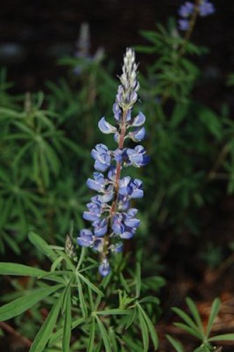
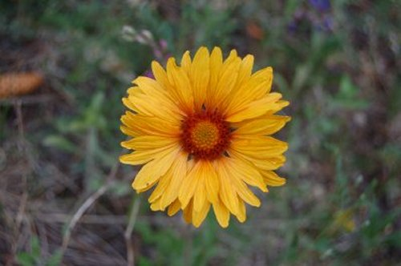
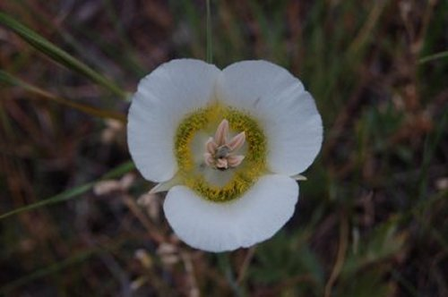

First Place: Lupine

- Submitted by: JGal03
- Shutter Speed: 1/100 sec.
- Focal Length: 32 mm.
- F-Stop Number: F/7
Second Place: Gaillardia

- Submitted by: Krys05
- Shutter Speed: 1/60 sec.
- Focal Length: 42 mm.
- F-Stop Number: F/5.3
Third Place: Mariposa Lily

- Submitted by: Babbers
- Shutter Speed: 1/60 sec.
- Focal Length: 55 mm.
- F-Stop Number: F/8